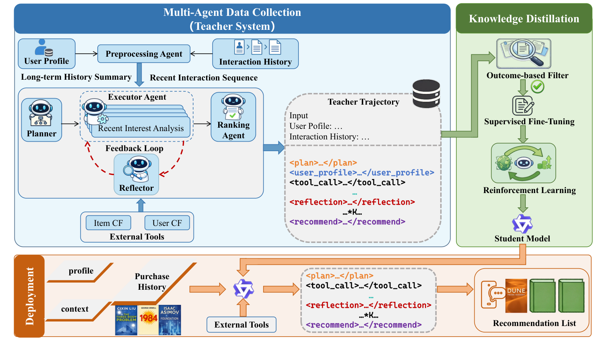
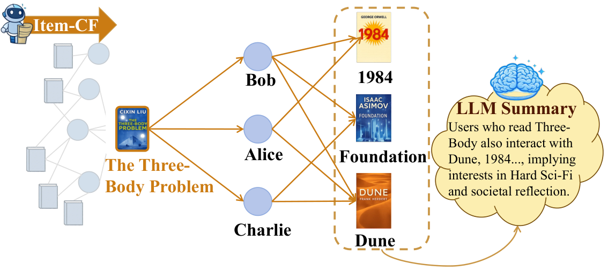
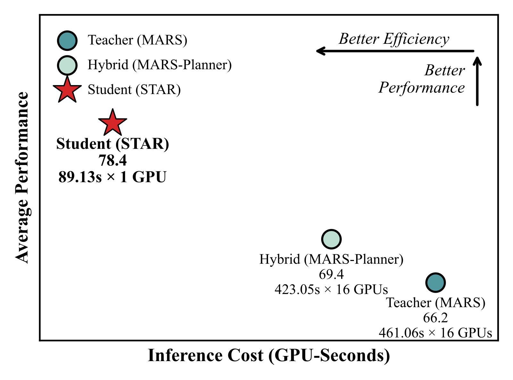
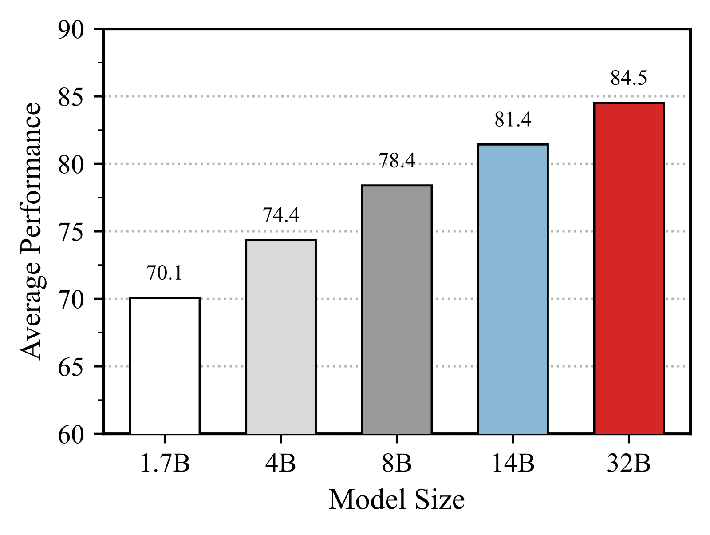

目录 · 8 节
1它到底在解决什么问题？2全景：老师是一群 agent，学生是一个模型3协同信号怎么变成文字4怎么把一群 agent 教给一个模型5实验结果说明了什么6我认为它的局限7一个推荐团队可以怎么试8结论和评价做 LLM 推荐、手上有一套多 agent 推荐流程却跑不动线上的团队值得读，但要带着怀疑读。腾讯这篇论文要解决的是一个很实际的矛盾：多 agent 系统能一步步推理、调工具，效果好，可一次推荐要跑几百秒、占 16 张卡。核心思想一句话：先搭一个会规划、会调协同过滤工具、会自我检查的多 agent 老师，把它答对的推理过程整理成一条长文本，再用 SFT 加 GRPO 教给一个 8B 的单模型。论文把老师叫 MARS（Multi-Agent Recommender System），学生叫 STAR（Single-agent Trajectory-Aligned Recommender）。在 Goodreads 的 5 个子任务上，学生的平均命中率是 78.4，老师是 66.2；单次推理从 16 张卡上的 461 秒降到 1 张卡上的 89 秒（图 4）。我认为它最有价值的是“把协同过滤结果写成文字证据再交给 LLM”这个工具设计，以及消融里“去掉自我检查掉得最多”这个发现；要留意的是，“学生超过老师”里混着领域内微调的收益，传统基线在 Yelp 兴趣漂移任务上其实比 STAR 高得多，89 秒也离线上很远。
它到底在解决什么问题？
LLM 做推荐，常见的有两条路。一条是把 LLM 当特征提取器，生成语义 embedding 再和协同过滤模型融合，协同信号进来了，但 LLM 一步步推理的能力用不上，结果也没法解释。另一条是 agent：让 LLM 调工具查数据、多轮推理。论文认为现有 agent 有两个问题。一是工具返回的要么是看不出理由的分数，要么是物品的原始属性，里面没有“很多人一起买过”这种群体行为信息。二是每多推理一轮就多一次模型调用，延迟随推理深度线性增长。
用论文附录里的一个真实样本贯穿全文：一个 Goodreads 用户，2012 到 2016 年读了大量儿童绘本，最近十几本集中在 Little Critter 这套系列和节日主题。系统要从 20 本候选书里挑出他下一本会读的书，其中 1 本是他真读了的，另外 19 本是随机抽的。这道题难在两处：只看书名和简介，LLM 不知道“读了这本的人还爱读哪些”；用户历史太长，直接塞进上下文放不下。
全景：老师是一群 agent，学生是一个模型

整个流程可以按下表理解：
| 阶段 | 做什么 | 产出 |
|---|---|---|
| 预处理 | 把用户历史按时间分组，LLM 逐组滚动写摘要，最后一组保留原样 | 一段长期摘要加最近的原始行为 |
| 老师推理 | 规划、执行（4 个分析 agent，可调工具）、反思、必要时重做、排序 | 一份 20 本候选书的排序 |
| 轨迹整理 | 把各 agent 的对话按顺序拼成一条带标签的文本，只留老师第 1 名就猜中的样本 | SFT 训练数据 |
| 学生训练 | 先 SFT 模仿，再用 GRPO 按命中名次给奖励 | STAR（Qwen3-8B） |
| 部署 | 学生一次生成全部阶段；写出工具调用后，由外部系统查出预先算好的文字接回，学生再接着写 | 排序结果 |
预处理这一步具体是：历史按时间排好后每 m 条行为分成一组，LLM 先给第一组写摘要，再把这份摘要和第二组一起交给 LLM 写一份新摘要，这样一组组滚下去，直到倒数第二组。最后一组不进摘要，原样和最终摘要拼在一起，作为老师的输入。附录 F.3 里学生的输入也是这个格式，一段长期摘要加最近的原始行为，所以部署时这段摘要同样要预先算好。附录的样本里，2012 年 6 月到 2015 年 2 月的行为被压成一段摘要，之后到 2016 年 3 月的行为保留原文。
老师推理这一步内部是这样走的。规划 agent 从 4 个分析任务里选出需要的几个，并给出执行顺序：用户画像（从基本信息、行为和评论里提炼特征和偏好）、长期兴趣（过滤掉异常和低价值行为后归纳稳定兴趣）、近期兴趣（看最近行为的即时性和新颖性）、兴趣扩展（沿关联、场景、群体共性三个方向找潜在兴趣）。执行 agent 按这个顺序逐个完成，过程中都可以调协同过滤工具。反思 agent 读全部执行结果，检查是否一致、合理、完整，指出有问题的子任务并给修改建议；这些子任务按建议重做。附录的轨迹模板里，重做的结果以“Re-executed Sub-task”单独成段，接在反思之后。最后排序 agent 汇总前面的全部证据，给 20 本候选书排序。
关键分工是：老师负责把推理过程做对并写下来，学生只学写下来的那一条，所以线上不再有多个 agent 来回传话。下面拆开讲。
协同信号怎么变成文字
为什么需要这一步？LLM 只看文字。“读过《三体》的人也常读《沙丘》和《基地》”这种信息，存在用户和物品的交互记录里，不在任何一本书的简介里。论文先用全部交互建一张用户-物品二部图，用户和书是节点，读过就连一条边，再在图上做两种游走。

Item-CF 工具走“书 → 读者 → 书”：以一本书为起点，找到读过它的人，再收集这些人常读的其他书。User-CF 工具走“用户 → 书 → 用户”：从目标用户读过的书出发，找到也读过这些书的其他用户，再汇总这些人喜欢的书。两个工具到这里得到的都只是一串书。和别的方案不同的是下一步：再让 LLM 把这串书归成几类，每类写一句共同点。附录 F.2 里，以触摸绘本 That's Not My Dinosaur 为起点，Item-CF 返回的是“以动物为主角的绘本”“互动和动手类图书”等 5 类，每类附几本代表书。
这一步很贵，每个用户、每本书都要调一次 LLM。论文的处理是全部离线做：图和邻居在上线前就是确定的，摘要算好后存成静态数据，线上调工具时只是查表。所以 STAR 在线上的“调工具”其实是一次读取：学生写出 <tool_call>，外部系统按参数查表，把结果作为 <tool_response> 接回上下文，学生再往下写。附录 F.3 的样例里，工具返回都用单独的箭头标出，表示这是外部接入的内容，不是学生自己续写的。图 1 下半部分的部署图里，外部工具也是一个单独的模块。代价落在存储上，作者在局限里也提到，用户和物品到十亿级时，给每一个都存一段摘要会很重。
怎么把一群 agent 教给一个模型
第一步是把老师的过程拼成一条文本。老师内部是多个 agent 互相传消息，论文把它整理成一条按阶段排列的长文本：规划写在 <plan> 里，用户画像写在 <user_profile> 里，调工具的那一段保留 <tool_call> 和工具返回，接着是 <reflection> 和最后的 <recommend>。保留工具调用标签很关键，学生学到的不只是答案，还有“什么时候该查一下协同信号、怎么查”。附录 F.3 那个儿童绘本用户的轨迹里，反思阶段判定“兴趣扩展”这一步太发散，指出它推荐漫画和奇幻类，和用户偏好的教育绘本不符，于是重做这一步，再进入排序。
第二步是过滤。只保留老师排在第 1 位的书正好是真实下一本的样本。附录表 3 里，三个数据集各留下约 8.6k、8.0k、4.7k 条。过滤的作用是让学生只模仿答对的推理，不学老师猜错时的那些路线。
第三步是 SFT。用这些轨迹做全参数微调，学生学会按阶段写、按格式调工具。
第四步是 GRPO。SFT 只是照着写，作者再用强化学习让学生在自己的输出里找更好的写法。每道题采样 8 条输出，每条的奖励是格式分加名次分：
是第 条输出， 是用户真实的下一本书。格式分 ：必需的阶段标签都在、工具调用语法正确就是 +1，否则 −1。名次分 ：真实的书排第 1 得 1 分，排进前 3 得 2/3，排进前 5 得 1/3，否则 0。
手算一个示意：同一道题的 8 条输出里，A 格式正确、真书排第 2，得 ；B 真书排第 1 但漏了反思标签，得 ；C 格式正确但真书没进前 5，得 1。GRPO 拿这 8 条的奖励互相比，A 比组内平均高，它的写法被加强；B 虽然答对了，因为不守格式反而被压低。这样设计的直觉是，格式分保住“按阶段推理、按语法调工具”的习惯，名次分推着学生把真书往前排。
GRPO 的训练题是专门挑的：用 SFT 后的模型每题采样 8 次，按成功的次数分成易（6–7 次）、中（3–5 次）、难（1–2 次），按 3:4:3 混合，每个数据集只有约 500 题。附录只用了“成功次数”这个词，一次输出算不算成功，判定标准要复现者自己定，比如真书排第 1，或者真书进前 5 且格式正确，两种定法分出来的档会不一样。成功 0 次和 8 次的题不在这三档里，训练集只用中间这些学生时对时错的题。这说明强化学习的预算全花在学生还没稳定掌握的题上。还有一处要补上：原文没有说明 GRPO 采样遇到工具调用时，是否执行真实检索并接回结果，还是由模型自己生成工具返回。复现时建议和部署保持一致，采样时也暂停生成、接回真实的工具结果，否则学生可能学会自己编造工具返回。
实验结果说明了什么
评测用的是 AgentRecBench（一个评测 agent 推荐系统的公开基准）的协议，三个数据集是 Amazon、Goodreads、Yelp。每个数据集有 5 个子任务：常规推荐、用户冷启动、物品冷启动、长期兴趣、短期兴趣，每个子任务 100 个样本，一共 1500 个。每个样本 20 本候选里只有 1 本是对的，指标是 HR@1、HR@3、HR@5 的平均。所有 agent 基线都用 DeepSeek-V3，老师 MARS 也是。
先算一个对照：20 选 1 随机排，HR@1 是 5%，HR@3 是 15%，HR@5 是 25%，平均正好 15.0。表 1 里 MF 和 LightGCN 在常规和冷启动任务上的分数全是 15.0，等于随机。这说明在这套协议下，传统模型在这些任务上基本没有学到东西，拿它们当基线说明不了太多。
| 方法 | Amazon 常规 | Goodreads 用户冷启动 | Yelp 常规 | Yelp 长期兴趣 | Yelp 短期兴趣 |
|---|---|---|---|---|---|
| LightGCN | 15.0 | 15.0 | 15.0 | 31.6 | 68.9 |
| RecHacker | 63.0 | 49.3 | 7.0 | 9.3 | 7.7 |
| MARS（老师） | 68.4 | 63.7 | 31.0 | 20.3 | 13.3 |
| STAR（学生） | 79.0 | 76.3 | 43.0 | 23.0 | 17.7 |
STAR 在 Amazon 和 Goodreads 上全面领先，Amazon 常规任务 79.0，比赛亚军 RecHacker 是 63.0。
Yelp 是另一幅图景。所有 agent 方法在这里都很低，STAR 在两个冷启动任务上只有 12.3 和 11.3，还不到随机的 15.0。兴趣漂移任务上反过来是传统模型强：LightGCN 的短期兴趣是 68.9，STAR 是 17.7。这说明正文“STAR 在所有数据集上都超过传统和 agent 基线”的说法，和它自己表 1 的这几格对不上。摘要里“学生超过老师 8.7% 到 39.5%”是相对提升，最大的 39.5% 出在 Yelp 物品冷启动，从 8.1 到 11.3，因为基数太小，相对数字显得很大。
消融都在 Goodreads 上做，数字是 5 个子任务的平均：
| 变体 | 老师 MARS | 学生 STAR |
|---|---|---|
| 完整 | 66.2 | 78.4 |
| 去掉工具 | 61.6 | 72.8 |
| 去掉规划 | 65.3 | 76.9 |
| 去掉反思 | 62.4 | 71.9 |
| 不做 GRPO | — | 75.5 |
学生这一列，去掉反思掉 6.5 个点，是最多的，比老师去掉反思掉的 3.8 个点还多。作者的解释是，过滤后的数据仍然都是答对的样本，但没有了“发现错误、回头重做”的那段过程，学生就学不会从中间的错误里恢复。去掉工具掉 5.6 个点，说明离线写好的协同信号文字确实有用。GRPO 带来 2.9 个点（75.5 到 78.4）。这说明在这个任务上，教会模型检查和改正自己的推理，比教它拆任务更要紧。

图 4 里还有一个对照组：只把规划 agent 换成微调过的 Qwen3-8B，其他 agent 仍用 DeepSeek-V3，分数 69.4，成本只从 461 秒降到 423 秒。这说明只蒸馏一个环节省不了多少，要整条流程合进一个模型，成本才降下来。按 GPU 秒算，16 卡 461 秒和单卡 89 秒相差约 80 倍。

学生从 1.7B 换到 32B，Goodreads 平均分从 70.1 升到 84.5。1.7B 的学生已经高于老师的 66.2。
我认为它的局限
第一，“学生超过老师”不能全算在蒸馏方法头上。老师是不做任何微调的 DeepSeek-V3，学生在同一个基准、同一类任务的约 8k 条数据上做了全参数微调，再在约 500 道题上做强化学习。1.7B 的学生都能超过老师，说明领域内训练本身就很强。论文缺一个对照：同样的样本只用“历史 + 候选 + 正确答案”直接微调、不带推理轨迹，能到多少分。没有这一行，就分不清收益来自推理轨迹还是来自领域内监督。
第二，评测规模小、口径窄。每个子任务 100 个样本，一个子任务里一个样本就值 1 个点的 HR@1，去掉规划只差 1.5 个点，很难说超出了波动。候选只有 20 个、负例随机抽，作者也承认，换成全库排序结果会怎样还不知道。
第三，离部署还远。89 秒一次推荐，离线上需要的亚秒级差两个数量级以上；离线摘要要覆盖每个用户和每本书，作者自己也说十亿级平台的存储是问题。另有一处文本不一致：正文说 SFT 是 3 个 epoch、学习率 2e-5、batch 16，附录表 4 写的是 2 个 epoch、1e-5、全局 batch 64，复现时要注意。
一个推荐团队可以怎么试
- 先只做工具这一层。给热门物品离线跑 Item-CF，把邻居书交给 LLM 归类写成几句话，作为现有 LLM 排序或生成推荐理由时的额外输入。看离线指标和推荐理由的人工评分，这一步不需要任何 agent。
- 再做对照实验，确认推理轨迹值不值。在同一批数据上训两个学生：一个只学最终排序，一个学完整轨迹。差距小，就没必要搭老师。
- 如果轨迹有用，优先保留反思和重做这一段，消融里它的贡献最大。训练数据只留老师答对的样本。
- 最后才考虑上线形态。89 秒的推理只适合离线精排、日更推荐理由这类不卡延迟的场景；要进实时链路，至少还要换小模型、缩短轨迹。
结论和评价
最关键的启发是：协同过滤的结果可以先写成一段文字证据，再交给 LLM 推理；而多 agent 系统真正值得蒸馏的，是它检查和改正错误的那一段过程。
| 维度 | 评价 |
|---|---|
| 问题重要性 | 中高。LLM 推荐的效果和延迟矛盾是落地的核心障碍 |
| 方法创新性 | 中。多 agent 蒸馏成单模型已有先例，新意在把协同过滤结果写成文字的工具，以及保留工具调用和反思的轨迹格式 |
| 实验证据 | 中偏弱。消融完整，但每格只有 100 个样本、候选只有 20 个；缺少不带轨迹的微调对照；Yelp 上不如传统模型 |
| 工程成本 | 高。要搭多 agent 老师、离线给每个用户和物品写摘要，学生单次推理仍要 89 秒 |
| 是否值得尝试 | 可以先试工具这一层：离线把协同邻居写成文字，成本最低、最容易单独验证 |
读完这篇，你觉得
夜读鸮记下了，谢谢你的反馈。
点一下即可，无需登录；再点一次撤回。只统计匿名次数，不记录你是谁。
讨论
欢迎补充实验细节、复现经验或不同看法。需 GitHub 登录。
正在加载讨论…